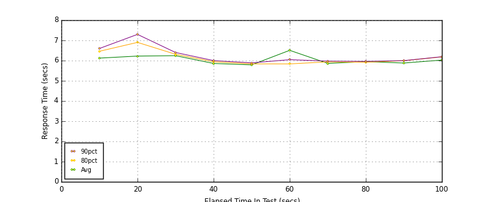
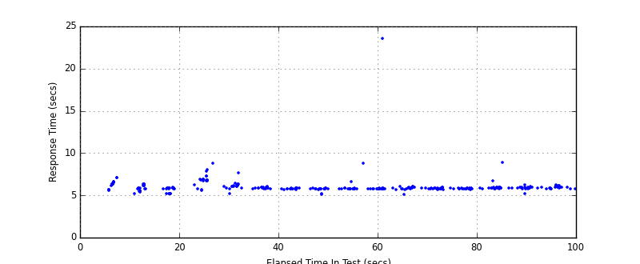
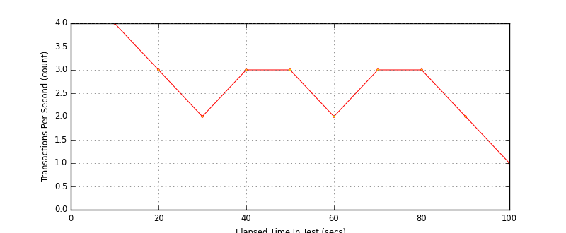

Performance Results Report
Summary
transactions: 339
errors: 1
run time: 100 secs
rampup: 0 secs
test start: 2014-11-04 18:33:44
test finish: 2014-11-04 18:35:18
time-series interval: 10 secs
workload configuration:
| group name | threads | script name |
|---|
| user_group-1 | 10 | v_user.py |
| user_group-2 | 10 | v_user.py |
All Transactions
Transaction Response Summary (secs)
| count | min | avg | 80pct | 90pct | 95pct | max | stdev |
|---|
| 339 | 5.155 | 6.034 | 6.105 | 6.401 | 6.819 | 23.611 | 1.091 |
Interval Details (secs)
| interval | count | rate | min | avg | 80pct | 90pct | 95pct | max | stdev |
|---|
| 1 | 40 | 4.00 | 5.168 | 6.123 | 6.461 | 6.600 | 7.136 | 7.147 | 0.444 |
| 2 | 39 | 3.90 | 5.185 | 6.224 | 6.902 | 7.298 | 7.887 | 8.012 | 0.738 |
| 3 | 23 | 2.30 | 5.227 | 6.244 | 6.313 | 6.401 | 7.658 | 8.804 | 0.696 |
| 4 | 37 | 3.70 | 5.691 | 5.859 | 5.942 | 6.001 | 6.009 | 6.072 | 0.092 |
| 5 | 37 | 3.70 | 5.157 | 5.789 | 5.837 | 5.888 | 5.899 | 6.645 | 0.209 |
| 6 | 28 | 2.80 | 5.155 | 6.509 | 5.837 | 6.046 | 8.771 | 23.611 | 3.402 |
| 7 | 34 | 3.40 | 5.720 | 5.862 | 5.937 | 5.975 | 6.023 | 6.064 | 0.086 |
| 8 | 38 | 3.80 | 5.719 | 5.950 | 5.920 | 5.963 | 6.699 | 8.897 | 0.514 |
| 9 | 28 | 2.80 | 5.243 | 5.880 | 5.993 | 5.999 | 6.094 | 6.249 | 0.164 |
| 10 | 15 | 1.50 | 5.783 | 6.026 | 6.185 | 6.192 | 6.280 | 6.280 | 0.149 |
Graphs
Response Time: 10 sec time-series

Response Time: raw data (all points)

Throughput: 5 sec time-series

Custom Timer: Add User
Timer Summary (secs)
| count | min | avg | 80pct | 90pct | 95pct | max | stdev |
|---|
| 319 | 0.579 | 1.334 | 1.383 | 1.576 | 2.208 | 4.267 | 0.441 |
Interval Details (secs)
| interval | count | rate | min | avg | 80pct | 90pct | 95pct | max | stdev |
|---|
| 1 | 40 | 4.00 | 0.597 | 1.232 | 1.575 | 1.648 | 1.659 | 1.713 | 0.319 |
| 2 | 39 | 3.90 | 0.603 | 1.639 | 2.332 | 2.698 | 3.336 | 3.429 | 0.743 |
| 3 | 23 | 2.30 | 0.592 | 1.502 | 1.538 | 1.552 | 1.757 | 4.214 | 0.632 |
| 4 | 37 | 3.70 | 1.139 | 1.263 | 1.337 | 1.378 | 1.437 | 1.468 | 0.086 |
| 5 | 37 | 3.70 | 0.579 | 1.193 | 1.233 | 1.272 | 1.288 | 2.058 | 0.205 |
| 6 | 28 | 2.80 | 0.586 | 1.285 | 1.232 | 1.294 | 1.452 | 4.217 | 0.590 |
| 7 | 34 | 3.40 | 1.130 | 1.261 | 1.340 | 1.383 | 1.387 | 1.472 | 0.084 |
| 8 | 38 | 3.80 | 1.127 | 1.342 | 1.305 | 1.344 | 2.122 | 4.267 | 0.511 |
| 9 | 28 | 2.80 | 0.682 | 1.287 | 1.362 | 1.388 | 1.475 | 1.626 | 0.149 |
| 10 | 15 | 1.50 | 1.146 | 1.397 | 1.520 | 1.576 | 1.637 | 1.637 | 0.152 |
Graphs
Response Time: 10 sec time-series

Response Time: raw data (all points)

Throughput: 10 sec time-series

Custom Timer: Load Add User Page
Timer Summary (secs)
| count | min | avg | 80pct | 90pct | 95pct | max | stdev |
|---|
| 319 | 0.536 | 0.634 | 0.624 | 0.674 | 1.062 | 2.255 | 0.184 |
Interval Details (secs)
| interval | count | rate | min | avg | 80pct | 90pct | 95pct | max | stdev |
|---|
| 1 | 40 | 4.00 | 0.544 | 0.881 | 1.150 | 1.223 | 1.870 | 1.881 | 0.348 |
| 2 | 39 | 3.90 | 0.540 | 0.574 | 0.596 | 0.608 | 0.614 | 0.639 | 0.023 |
| 3 | 23 | 2.30 | 0.544 | 0.728 | 0.776 | 0.782 | 0.787 | 2.255 | 0.342 |
| 4 | 37 | 3.70 | 0.538 | 0.585 | 0.610 | 0.622 | 0.629 | 0.633 | 0.027 |
| 5 | 37 | 3.70 | 0.536 | 0.585 | 0.606 | 0.617 | 0.628 | 0.628 | 0.023 |
| 6 | 28 | 2.80 | 0.537 | 0.578 | 0.599 | 0.610 | 0.612 | 0.617 | 0.022 |
| 7 | 34 | 3.40 | 0.543 | 0.590 | 0.612 | 0.624 | 0.633 | 0.653 | 0.026 |
| 8 | 38 | 3.80 | 0.542 | 0.598 | 0.627 | 0.643 | 0.665 | 0.670 | 0.033 |
| 9 | 28 | 2.80 | 0.542 | 0.582 | 0.608 | 0.629 | 0.629 | 0.671 | 0.033 |
| 10 | 15 | 1.50 | 0.577 | 0.618 | 0.674 | 0.682 | 0.694 | 0.694 | 0.038 |
Graphs
Response Time: 10 sec time-series

Response Time: raw data (all points)

Throughput: 10 sec time-series